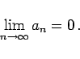
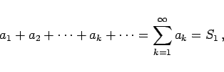
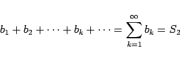
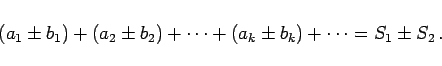
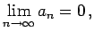
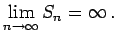

Inhalt Index DeskTop Bronstein

 Unendliche Reihen Reihen mit konstanten Gliedern Allgemeine Konvergenzsätze
Unendliche Reihen Reihen mit konstanten Gliedern Allgemeine Konvergenzsätze


|  | (7.20) |
Hierbei handelt es sich um eine notwendige, nicht aber um eine hinreichende Bedingung.
|  | (7.21a) |
|  | (7.21b) |
folgt die Konvergenz der folgenden Reihe mit der angegebenen Summe:
|  | (7.21c) |
| Beispiel |
|
Für die harmonische Reihe (7.16) ist  aber  |